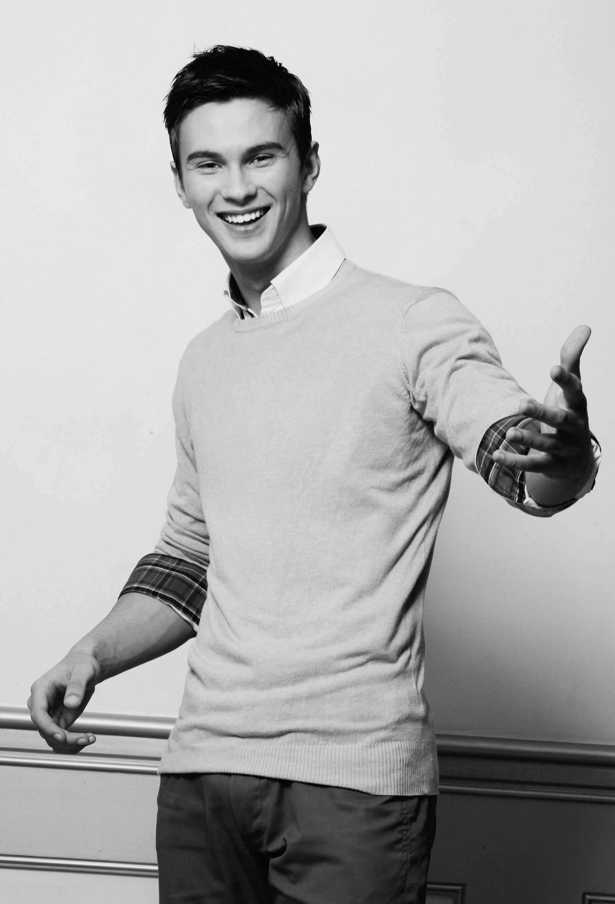

Biografija
Sinan Šubara, rođen je 02.06. u petak, 1995. godine, u Mostaru. Živi u Jablanici, jednom malom gradu Bosne i Hercegovine koji se nalazi uz rijeku Neretvu, gdje je i odrastao. Odrastao je uz majku Nerminu, oca Nijaza i sestru Dalmu. Prvu ljubav prema kompjuterima je osjetio u svojoj 6. godini, kada mu je otac kupio prvi računar, 2001. godine. U osnovnu školu je pošao sa 7 godina, tačnije 01.09.2002. godine. Košarku je počeo da trenira sa 10 godina, u klubu "Granit" Jablanica, gdje je imao veoma dobre rezultate zajedno sa svojim timom. Prvi pehar u Sarajevu sa svojim timom, je osvojio za 4 godine, u skenderiji. To je bio ne samo za njega, nego i za ostalu djecu iz Jablanice poticaj da pođu trenirat košarku.
Kroz par godina klub se raspada zbog nesuglasica u upravi kluba, te prelazi u drugi Jablanički klub "Turbina". Klub i trener nisu bili toliko okrenuti prema budućnosti kluba, to jest, novim generacijama, i tako su došle mnoge povrede. U 8. razredu osnovne škole, napušta košarku. Završio je 8 godina osnovne škole sa odličnim uspjehom, i primjernim vladanjem. Roditelji su u toku osnovne škole primjetili tu ljubav prema kompjuterima, i tako ga upišu u "JU Srednju elektrotehničku školu" u Mostaru, smjer "Računarske tehnike i automatike", 2010. godine. Dolazeći u novu sredinu Sinan se dobro snalazi, upoznaje puno novih prijatelja i poznanika.
2012. Godine, Sinan je imao prvo profesionalno slikanje, i za vrlo kratko vrijeme, potpisuje ugovor sa najboljom modnom agencijom na balkanu, "FOX", u Beogradu. Slikanje mu je bilo više kao hobi. Putovanja po cijelom svijetu, upoznavanja novih ljudi, novih kultura, sticanje samopouzdanja kroz sam posao, je donijelo Sinanu veliku radost. Prvu modnu reviju je imao u Međugorju 2013. godine, "Sajam vjenčanja", gdje je nosio kreacije za "Cesar's" modnu kuću. Srednju školu završava 2014. godine, kada dobija i najbolju ponudu iz svijeta modelinga, da napusti Bosnu i Hercegovinu na dvije godine, počne da živi i radi u Dubai-u. Roditelji su ga spremni bili podržat, šta god da je on izabrao, ali izabrao je školu, jer je malo razmišljao i pričao sa svojim roditeljima o tome, šta će biti kad napusti posao modela. U međuvremenu Sinan je glumio u više muzičkih spotova i reklama, a navest ćemo i neke pjevačice u čijim muzičkim spotovima se pronašao: Jelena Tomašević, Amna Keskin, i Ceca. 2016. godine, Sinan je odabran da predstavlja Bosnu i Hercegovinu na svjetskom takmičenju, "Mister Universal", koji se održavao na Bali-u, Indonezija. Bio je drugo mjesto u nagradi za fotogeničnosti, prvi u glasanju publike u kojem je osvojio preko 30 hiljada glasova, i dobio diplomu za "People's Choice Award".
Upisuje Fakultet Informacijskih Tehnologija, u Mostaru, gdje i danas studira. Pohađao je mnoge kurseve vezanih za kompjutersku tehniku, a onaj zadnji i najvažniji, kurs za Web Design, u Jablanici, 2018. godine, koji je finansirao 'UNDP' i Evropska unija. Kurs je trajao 6 mjeseci uz iskusnog predavača Aldina Nezirića, a tehnologije koje su rađene su mu omogućile lakše shvatanje predmeta na fakultetu Web Razvoj i Dizajn, a neke od tehnologija su(HTML5,CSS, Javascrip, JQuery, AJAX, Bootstrap, Angular, ReactJS). Sinan je postao dajo prvi put 2013. godine, a ne tako davno u 2018. godini je dobio još jednu princezu, tako da je sad "dupli dajo". Sinana iz dana u dan sve više se zanima masiranje, uči i informiše se od iskusnih masera. Uživa u hrani, u slobodno vrijeme voli da gleda filmove, i naravno veliki fan je igrica, u kojima je bio i dosta uspješan, igrao je na mnogim turnirima, gdje je zabilježio i značajne rezultate, a neke od igara su "Counter-Strike:Global Offensive" i "Dota 2".